01
Understand & Validate
Clarify roles, system functions, and operational needs to define the design scope.
SPIRIT-AI
MOZHMI O&M
As part of an industrial robotics product update for use in CATL factories, the team planned to integrate MozLink’s remote control capabilities into the existing MozHMI system to support equipment monitoring, task execution, and on-site maintenance.
The update required integrating existing functions and refining interactions, while reorganising information and workflows within the established product architecture.
The operations and maintenance update needed to bring together remote control capabilities, task workflows, and equipment status information. These functions were spread across different systems and versions, each with its own interface structure and interaction logic.
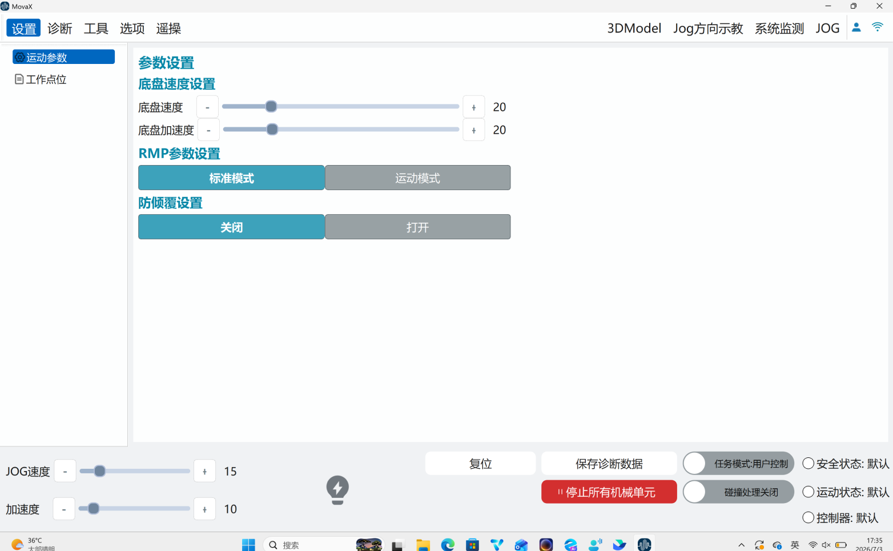
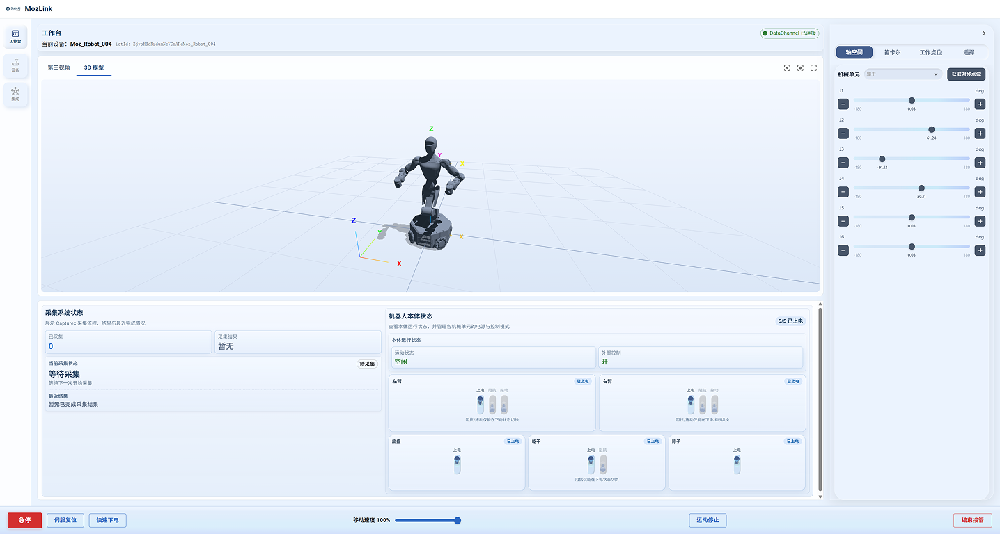
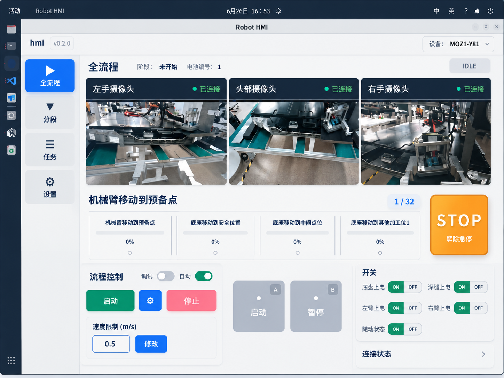
THE DESIGN CHALLENGE
Within the established product direction, I analysed the systems and mapped the relationships between roles and functions to define the module’s information architecture and interaction logic.
01
Clarify roles, system functions, and operational needs to define the design scope.
02
Define information zones, interaction flows, and interface behaviour across different states.
03
Review operational logic with product and engineering teams, and refine the design through feedback.
Iterate through product and engineering feedback
01 Information Architecture
Create distinct information zones by reorganising equipment status, task information, and operational controls.
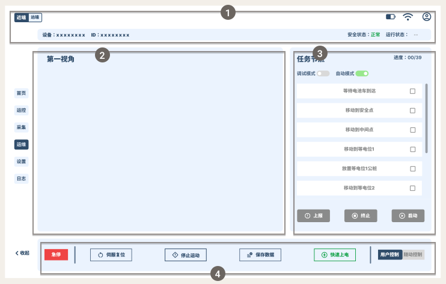
02 Interaction Design
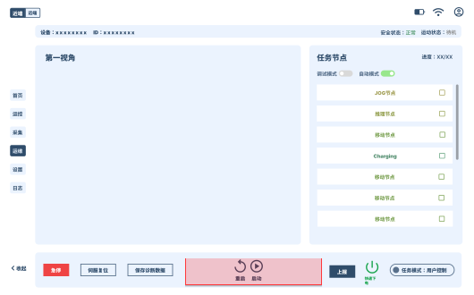
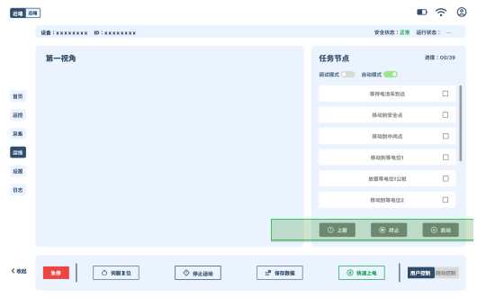
EARLY EXPLORATION
FINAL DESIGN
03 STATE-BASED INTERACTION
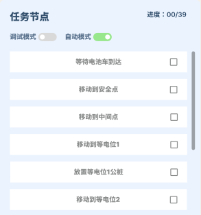
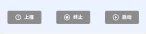
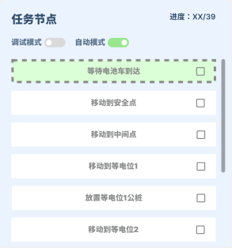
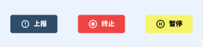
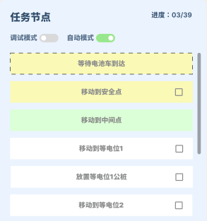
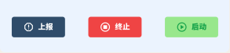
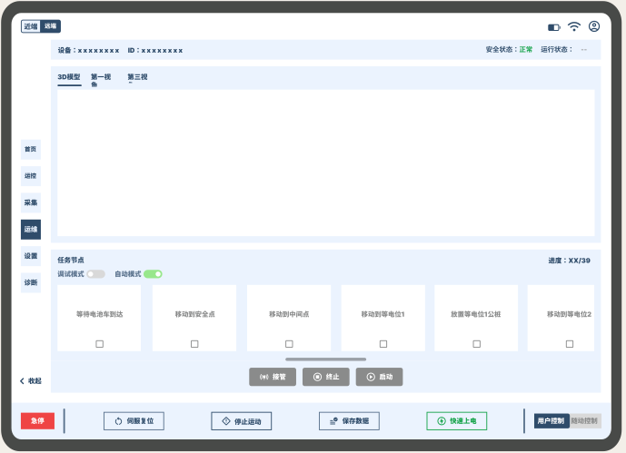
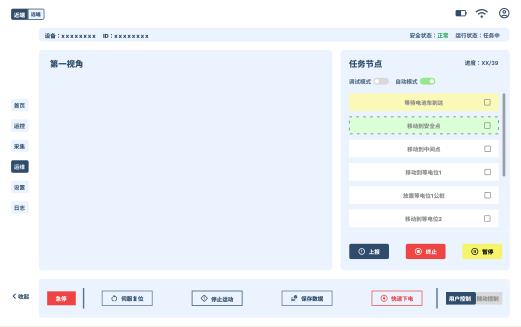
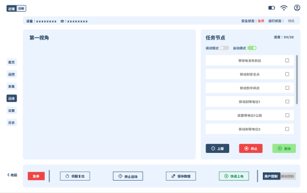
WHAT I LEARNED
This internship taught me that designing complex B2B products goes beyond improving interfaces. It requires understanding the relationships between system functions, user responsibilities, and operational workflows.
With evolving requirements and design standards still taking shape, I proactively reviewed functional logic with product and engineering teams, clarified the design scope, and organised fragmented information into a clearer interaction structure.